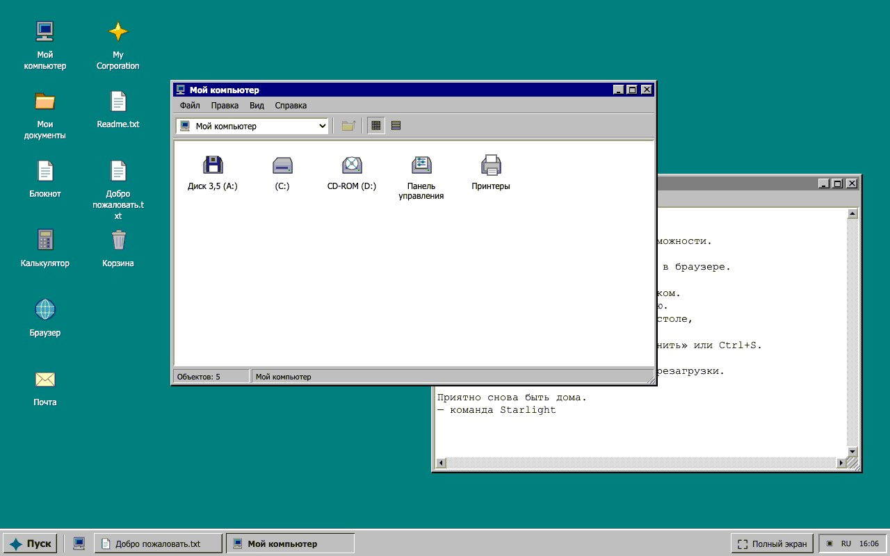
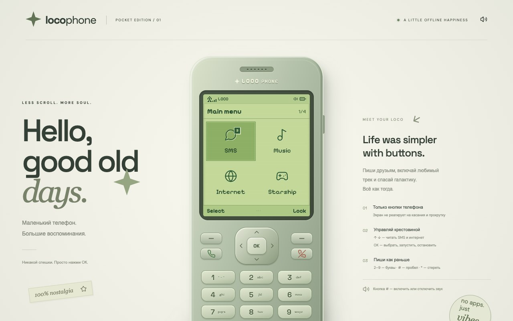

Приложения
Выберите версию Starlight или откройте Loco Phone.
 Открыть рабочий стол
Открыть рабочий столStarlight XP
2002Рабочий стол, почта, браузер и игры.
Открыть XP

Открыть рабочий столStarlight 1996
1996Классический рабочий стол, файлы и программы.
Открыть 1996

Взять телефонLoco Phone
2000-еСимулятор кнопочного телефона с SMS, музыкой и игрой.
Открыть Loco Phone